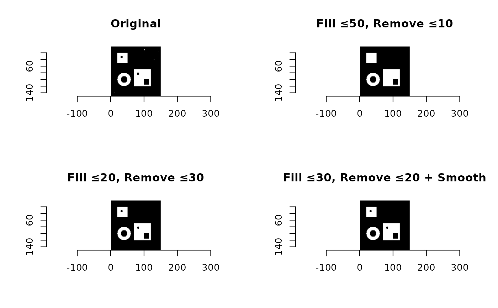

Clean binary images by filling holes, removing small artifacts, and optionally smoothing edges
Source:R/clean_image.R
clean_image.RdThis function performs a comprehensive cleaning operation on a binary image by: 1. Filling internal black holes (regions of 0 surrounded by 1s), 2. Removing small internal white artifacts (1s not connected to the image border), and 3. Optionally applying edge smoothing to refine boundaries of root structures or other objects.
Usage
clean_image(
img,
max_hole_size = NULL,
max_artifact_size = NULL,
edge_smooth = TRUE,
kernel_shape = "disk",
kernel_size = 3,
iterations = 1,
select.layer = NULL,
report = FALSE
)Arguments
- img
A `cimg` object representing a binary image with pixel values 0 and 1.
- max_hole_size
Maximum size (in pixels) of black holes to fill. If `NULL`, all holes are filled.
- max_artifact_size
Maximum size (in pixels) of white artifacts to remove. If `NULL`, all isolated objects are removed.
- edge_smooth
Logical; if `TRUE`, applies morphological smoothing to object edges.
- kernel_shape
Shape of the morphological kernel used for smoothing. One of `"disk"` (default), `"square"`, etc., depending on your implementation of `smooth_root_edges()`.
- kernel_size
Size of the structuring element used for edge smoothing.
- iterations
Number of times the smoothing operation is applied.
- select.layer
Integer specifying the layer to use if
imgis a multi-layer `SpatRaster`. Defaults toNULL, which may use package-specific defaults for each method.- report
Logical; if `TRUE`, the function returns a list with the cleaned image and a printed report on hole and artifact sizes. Defaults to `FALSE`.
Value
A cleaned `cimg` object. If `report = TRUE`, returns a list with two elements: the cleaned image and the printed summary.
Details
Holes and artifacts are detected using connected component labeling. Objects touching the image border are preserved and not modified. Pixel connectivity is assumed to be 4-connected.
Examples
# Create a complex test image with holes and artifacts
img <- imager::as.cimg(matrix(0, 150, 150)) # Start with black background
# Create multiple white objects with black holes
img[20:50, 20:50] <- 1 # White square 1
img[30:35, 30:35] <- 0 # Small black hole in square 1
img[70:120, 70:120] <- 1 # White square 2
img[80:85, 80:85] <- 0 # Small black hole 1 in square 2
img[100:115, 100:115] <- 0 # Large black hole 2 in square 2
# Add small artifacts (1-pixel specks)
img[10, 140] <- 1
img[145, 15] <- 1
# Add a 2×2 speck
img[130:131, 40:41] <- 1
# Add an irregular blob
img[100:102, 10] <- 1
img[101:102, 11] <- 1
img[101, 12] <- 1
# Create a white ring (donut shape)
center_x <- 40
center_y <- 100
for (i in 1:150) {
for (j in 1:150) {
dist <- sqrt((i - center_x)^2 + (j - center_y)^2)
if (dist <= 20 && dist >= 10) {
img[i, j,,] <- 1
}}}
# Clean with various thresholds
cleaned1 <- clean_image(img, max_hole_size = 50, max_artifact_size = 10)
cleaned2 <- clean_image(img, max_hole_size = 20, max_artifact_size = 30)
cleaned3 <- clean_image(img, max_hole_size = 30, max_artifact_size = 20,
edge_smooth = TRUE, kernel_size = 3)
# Plot results
par(mfrow = c(2, 2))
plot(img, main = "Original")
plot(cleaned1, main = "Fill ≤50, Remove ≤10")
plot(cleaned2, main = "Fill ≤20, Remove ≤30")
plot(cleaned3, main = "Fill ≤30, Remove ≤20 + Smooth")

par(mfrow = c(1, 1))